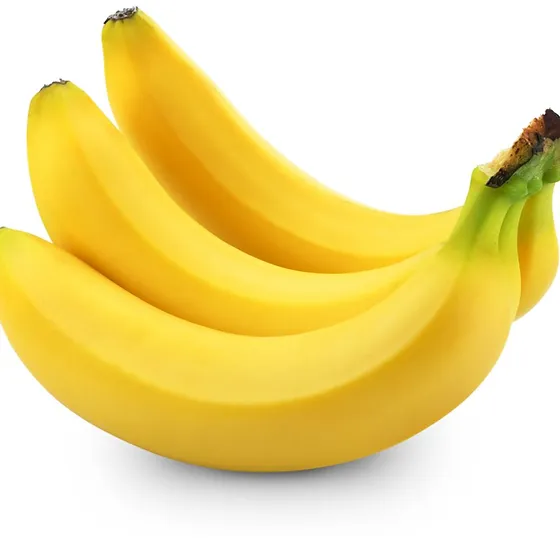

- Half and Half ">
- Yogurt
- Mozzerella Cheese Click here for Mozzerella
- 2% Milk
- Cream cheese


- Apples
- Peaches
- Banannas 
- Cherries
- Pears


- Carrots
- Broccoli
- Chickpeas
- Lettuce
- Onions


- Iced tea
- Cranberry Juice
- Monster Energy
- Ginger Ale
- Apple Juice
- Bagels
- Wholewheat Bread
- Rigatoni
- Rolls
- English muffins